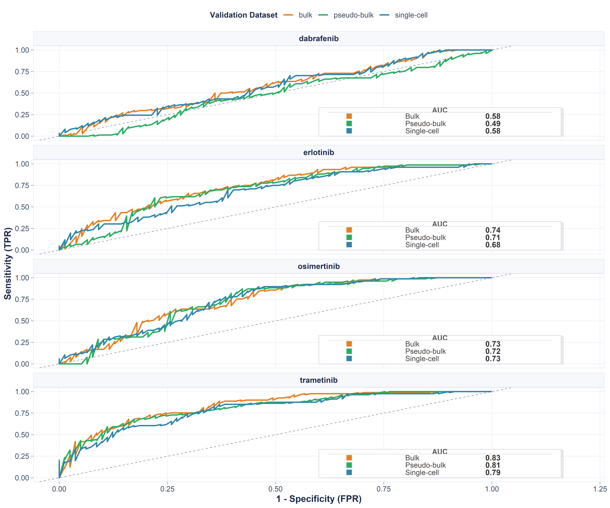
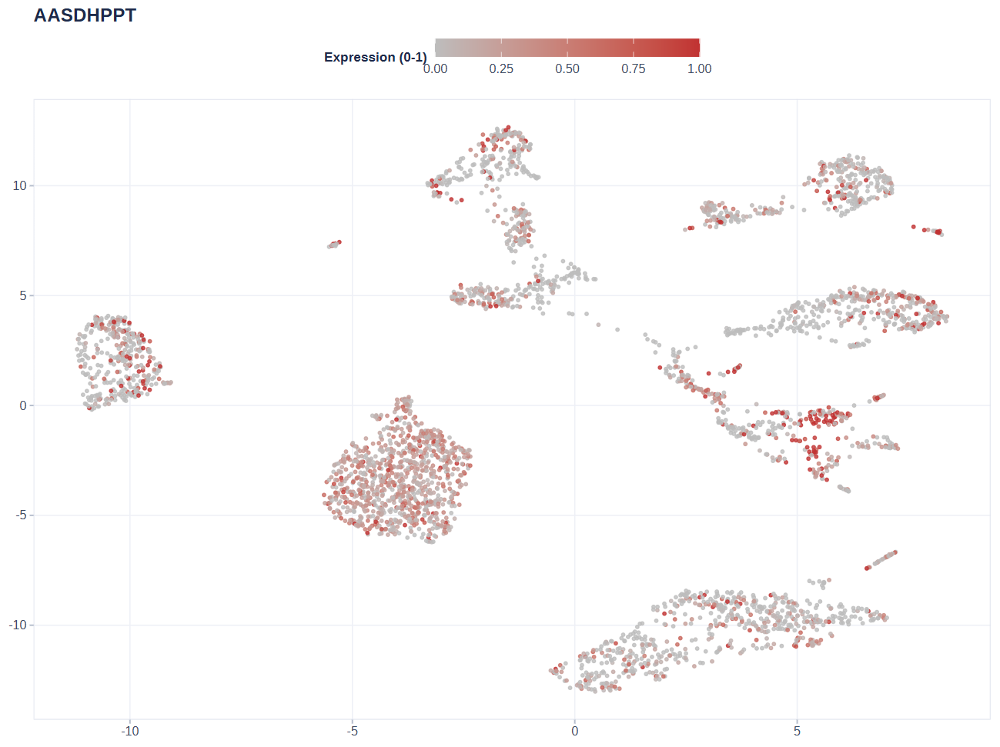
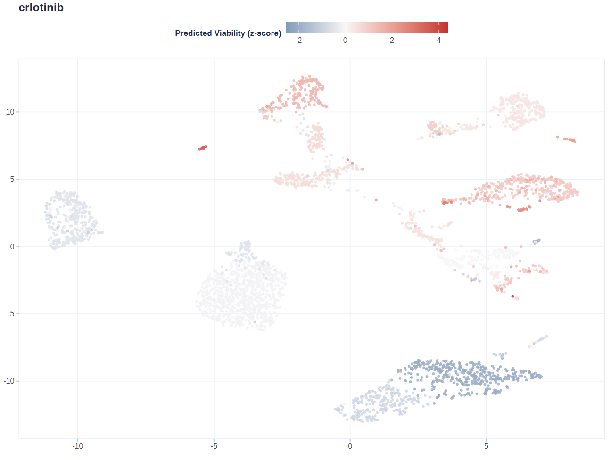
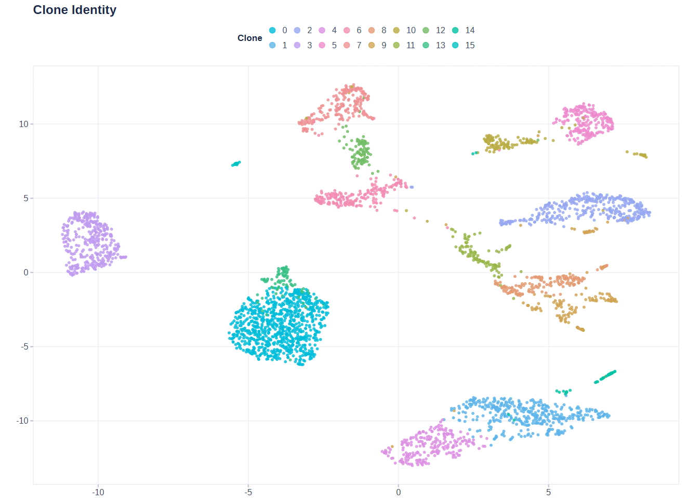

PERCEPTION-shiny User Guide
PERCEPTION-shiny is the web interface of the PERCEPTIONx R package. It wraps the full analysis pipeline — data loading, model training, drug-sensitivity prediction, and visualization — into a point-and-click application. You can go from a patient single-cell expression matrix to clone-level viability scores and patient-level response stratification without writing code.
The methodology is PERCEPTION (PERsonalized single-Cell Expression-based Planning for Treatments In ONcology): elastic-net models are trained on DepMap cell-line screens, then applied to a patient’s single-cell profile to predict drug response and resistance.
0. Requirements & Launch
0.1 Requirements
R ≥ 4.1.0.
Main dependencies:
remotes,shiny,bslib,Seurat,ggplot2,ggiraph,glmnet,caret,DT,plotly,waiter,thematic,callr,readxl. The app prompts you to install anything that is missing when a feature needs it.
0.2 Launch
From the package source root:
devtools::load_all() # load PERCEPTIONx from source
run_perception_app() # launch the app (opens your browser)Or run the app directory directly:
shiny::runApp("inst/shiny/app")0.3 Overall Flow
DepMap reference data ──► Model training ──► Clone/patient prediction ──► Visualization & validation
▲ ▲ ▲ ▲
Data tab Train tab Predict tab Visualize tab
(or load pre-trained (or skip training —
models directly) use the 44 pre-
trained models)For the fastest result, follow Load Demo → Predict → Visualize. No training is needed.
A note on the architecture: all heavy computation — model training, Seurat clustering, prediction, and plot math — runs in background worker processes, never in the interface. The UI polls the workers and shows progress, so one user’s large task never freezes anyone else.
Training with the standard DepMap uses a shared master process: a single global background worker holds one in-memory copy of DepMap, shared across concurrent jobs on Linux via fork, and exits after 12 idle hours to release memory. Uploaded DepMap files run in isolated per-session workers so a bad upload cannot affect others.
Clustering, prediction, plots, and Load Demo each run in a light per-session worker that writes results back to files the UI picks up.
Deployment knobs:
PERCEPTION_WORKERS(shared-pool parallelism, default 16) andPERCEPTION_WORKER_IDLE_MINUTES(master idle-exit minutes, default 720).
1. Interface Overview

The home page shown above is the entry point. The top bar has six tabs: Home, Data, Train, Predict, Visualize, and Help, and the workflow runs left to right — load data, train or load a model, predict, then visualize and validate.
On the home page itself you get an introduction, a four-step guide (Load Data → Train Model → Predict → Visualize; each step jumps to the matching tab), a live data-status overview, key feature cards, and citation info. The Quick Start and Load Demo buttons load the demo data in one click.
2. Data Tab: Loading Data
The Data tab is where everything starts. It loads four kinds of input: a demo dataset, the DepMap reference, your own expression matrix, and clinical responses. Each item turns its status badge green once loaded.
Click Load Demo to generate a synthetic dataset on the fly — 49 genes × 400 cells × 20 patients — that is automatically clustered, rank-normalized, and used to train demo models. It is a quick way to smoke-test the whole flow.
2.1 Loading DepMap Reference Data (required for training)
There are two ways to get the DepMap reference data:
Download & Load: downloads the reference set (~567 MB, 15k+ genes × 1,000+ cell lines) from the official mirror and loads it automatically. This is the standard training input and the most memory- and disk-hungry step.
Upload a local .RDS: if you already have the
DepMap.RDSfile, browse to it and it loads automatically.
Memory note: the interface process only reads DepMap metadata (gene names, drug list, component dimensions — a few hundred KB). The full multi-GB object is loaded by a background worker in a separate process, only when training runs, so concurrent users do not each hold an 8 GB copy.
2.2 Loading Models
Two ways:
Download & Load: one-click download of the 44 FDA-approved pre-trained models (for example
abemaciclib,erlotinib,osimertinib). Multi-selected items each show an × to remove them individually.Upload a local .RDS: select a trained model file (from
train_models()or exported from the Train tab) and it loads automatically.
2.3 Uploading an Expression Matrix (patient scRNA-seq)
Accepted formats: CSV / TSV / TXT / Excel (.xlsx / .xls) / RDS.
Accepted R objects: a numeric matrix or data.frame (genes × cells). Seurat objects are not accepted directly — export the matrix first.
Orientation: genes as rows, cells as columns. If the first column is a character column of gene names (common in Excel/CSV exports), it is converted to row names automatically.
Normalization: the expression should be rank-normalized. If you upload raw counts, the app can normalize them automatically during clustering.
2.4 Uploading the Cell-to-Patient Map (Mapping)
Accepted formats: CSV / TSV / TXT / Excel / RDS.
Required columns:
cell_id(cell names, matching the expression matrix column names) andpatient_id(the patient each cell belongs to). Column names are case-insensitive, soPatient,PATIENTall work.Named list RDS: if the RDS is a named list of patient → cell-name vector (for example the paper demo’s
PRJNA591860_sample_cell_names.RDS), it is converted to long format automatically; empty samples are dropped.
2.5 Uploading Clinical Responses (Response, optional but recommended)
Accepted formats: CSV / TSV / TXT / Excel / RDS.
Required columns:
patient(must exactly matchpatient_idin the Mapping) andresponse(the patient’s true clinical outcome for the drug).Labels are normalized automatically:
responder/responsive/r/sensitivebecome Responder;non-responder/nr/resistantbecome Non-responder.A check runs on upload: if the patient IDs do not overlap with the Mapping at all, a warning is shown.
Why it is needed: only with true outcomes can you validate predictions (ROC curves, responder vs. non-responder boxplots). Skip it if you only want prediction scores.
For the paper demo lung cohort (PRJNA591860), you can label patients by treatment timepoint and keep the groups as-is (TN / RD / PD) without collapsing them into two classes. When a binary label is needed for the ROC, choose two groups to compare on the Visualize tab.
2.6 Clustering (Seurat)
Do not skip this step: clustering defines the cell subpopulations (“clones”) that downstream prediction and visualization are built on. Without it, clone-level prediction and clone-level figures have no input.

Choose a clustering method (UMAP or tSNE) and set the parameters shown in the screenshot above, then run the clustering. The embedding is displayed with cells colored by cluster. The clustering only defines clones; prediction then works at the clone level, using each clone’s mean expression.
| Parameter | Description | Suggested |
|---|---|---|
| Seurat Resolution | clustering resolution; higher = finer clusters | 0.5–1.0 |
| Seurat Dims | number of PCA dimensions used | 10–30 |
| Seurat NFeatures | number of highly variable genes; fixed at 2000 in the app | — |
3. Train Tab: Training Models (Optional)
DepMap reference data must be loaded first; the top of the page tells you what is missing.
If you only want to predict, you do not need to train — just use the 44 pre-trained models from the Data tab. The Train tab exists for other drugs, other cancer types, custom gene sets, or inspecting model performance on the three validation datasets.
3.1 Parameters
| Parameter | Description |
|---|---|
| Drug Name | free-text input; one drug per line or comma/space-separated (combination regimens supported) |
| Cancer Type (include) | cancer types to include, default PanCan (pan-cancer) |
| Cancer Type (exclude) | cancer types to exclude (to avoid self-validation) |
| Gene Symbols | gene list; leave empty = use all DepMap genes (recommended); paste text or upload .txt/.csv |
| Top k Features | keep the top-k ranked features in the model |
| Algorithm | elastic net glmnet (recommended) or random forest
rf
|
| CPU Cores | number of parallel cores |
3.2 Interpreting the Results
Once training finishes, the Train tab reports four things:
Model Summary: model type and hyperparameters per drug (glmnet alpha/lambda, or rf ntree/RMSE).
Performance Plot: model performance curve (threshold vs. correlation).
Performance Metrics: prediction–truth Pearson correlation and p-value on Bulk, Pseudo-bulk, and Single-cell levels. Higher correlation and lower p-value mean a better model.
Download Model (.RDS): export the trained model, to re-upload later on the Data tab.

The validation ROC curve (above) shows how well the trained model
separates responders from non-responders on each of the three validation
cohorts. Every curve is annotated with its AUC: the closer the AUC is to
1, the stronger the clinical stratification. Like the Performance Plot,
it is only available for models trained in the Train tab (or via
train_models()). Pre-trained models loaded with
load_model() do not carry validation fields; the app will
tell you they are not applicable.
4. Predict Tab: Predicting Viability Scores
Select the loaded models (pre-trained from the Data tab or trained on the Train tab) and click predict. Prediction runs in two stages:
Clone-level: a viability score for every clone × every drug. The model outputs viability (survival), so higher = more resistant and lower = more sensitive. The prediction heatmap shows raw model values; the lollipop plot and UMAP Drug Viability use a z-score centered at 0.
Patient-level: clone scores are aggregated to patients by clone proportion (default
weighted_max), giving each patient’s drug-sensitivity stratification.

The heatmap above shows the raw predictions for every clone (rows) against every drug (columns). Darker cells mean lower viability (more sensitive), brighter cells mean higher viability (more resistant). Hover any cell for the exact value. The downloadable prediction tables below the heatmap carry the same numbers.
5. Visualize Tab
This tab turns the predictions into figures, so run a prediction first. All figures are interactive SVG built on ggiraph: hover any point or bar to see details (clone id, viability score, proportion, FPR/TPR). The in-figure toolbar has zoom disabled; export to PNG/PDF via the download buttons at the top of the page.
5.1 Clone Distribution (stacked bar chart)

The stacked bar chart shows, for each patient, the proportion of each clone inside the tumor; one color band is one clone. A clone that dominates a patient’s tumor is a natural candidate for driving that patient’s response, so this chart is the first place to look for heterogeneity.
One caveat: clone identity depends on the data source. With global clustering, the same clone color is genuinely shared across patients. With clone-level input using per-patient labels (c1/c2/c3), the same color across patients is only a shared category label, not the same clone.
5.2 Clone Viability (lollipop plot)

Each lollipop is one clone of one patient:
One facet per patient, one lollipop per clone, all samples and all clones shown.
Color is a blue-white-red diverging ramp: blue = predicted sensitive (low viability), red = predicted resistant (high viability). The color limits adapt to the data, so extreme z-scores keep a real color instead of clipping to grey.
Point size encodes the clone’s proportion in the tumor — the biggest balls are the clones that matter most for the patient.
Within a patient, clones are ordered by proportion descending; responders come first when response data is present.
The y-axis is Predicted Viability (z-score), with a zero line as the reference: above zero means resistant, below zero means sensitive.
5.3 ROC Curve

The ROC curve compares patient-level prediction scores against the true clinical labels uploaded on the Data tab, and every curve is annotated with its AUC. An AUC above 0.5 means the model stratifies better than chance, and values closer to 1 indicate strong clinical separation. If you predicted with several models, pick a specific one from the dropdown to view its curve.
5.4 Response Boxplot (responders vs. non-responders)

This boxplot compares the distribution of prediction scores between Responder and Non-responder groups, with a significance test result printed above the plot. Clear separation between the two boxes means the model separates the two groups well and that the score is clinically meaningful.
5.5 Model Performance

This plot lives on the Train tab (it is the Performance Plot from section 3.2), not on the Visualize tab. It traces how prediction–truth correlation changes across model thresholds on the validation cohorts. A curve that stays high and flat across thresholds indicates a stable model. It requires models trained on the Train tab; it is not applicable to pre-trained models.
5.6 Spatial Plots (UMAP / t-SNE)

The gene expression view colors every cell by the expression of a single gene. Values are winsorized to the 5th–95th percentiles and scaled to [0, 1], then shown on a grey-to-red ramp: grey means no or low expression, red means high expression. Use it to see which cell groups express the gene highly.

The drug viability view colors every cell by its clone’s predicted viability score, which produces a patchwork of blocks: red blocks are predicted resistant (high viability), blue blocks are predicted sensitive (low viability). It shows where the resistant and sensitive subclones sit in the embedding.

The clone identity view colors by clone (cluster) to show the population structure. It is the reference view that ties the two previous ones together: when a clone’s territory is red in the viability view and also red in the gene expression view, that gene and that resistance go together spatially.
How to read the three views together: if the cells with high gene expression are also bright (high viability) in the viability view, the gene’s high expression is positively associated with resistance; if dark, with sensitivity. Keep in mind that the two color scales are different, so compare spatial patterns, not absolute values.
6. Help Tab
The Help tab contains built-in documentation covering every tab, the FAQ, and usage tips. Check it first when you get stuck.
7. FAQ
Q1: “Maximum upload size exceeded”?
The upload limit is 1 GB. For larger data, preprocess locally first (for example subset genes); for DepMap, prefer the Download & Load button, which downloads on the server side rather than through the browser.
Q2: Model Performance says performance fields are missing?
That plot needs validation metrics produced during training.
Pre-trained models (load_model()) do not carry them. Train
on the Train tab first, or load the demo models on the Data tab.
Q3: How do I construct the response labels?
Build a two-column table patient /
response. patient must exactly match
patient_id in the Mapping. response values are
normalized automatically (responder → Responder, and so on). Response
labels keep multiple groups (for example TN/RD/PD) without collapsing
timepoints; when the ROC needs a binary label, pick two groups to
compare on the Visualize tab.
Q4: Why is a viability score lower than I expected?
Scores are relative ranks learned from DepMap, not absolute percentages. The prediction heatmap shows raw model values, while the lollipop plot and UMAP Drug Viability use a z-score centered at 0. Higher values mean the most resistant clone in this batch, not an absolute viability percentage. Clonal heterogeneity and activated resistance pathways both raise the score.
Q5: Does data persist after I close the app?
Yes. DepMap data is cached in a persistent directory (on Windows, the
user data directory; on Linux, set the
PERCEPTIONX_DEPMAP_CACHE_DIR environment variable) with a
12-hour unused-expiry mechanism. Files stay on disk after the app
closes; if unused for more than 12 hours, the next click deletes and
re-downloads them.
Q6: Why does the interface stay responsive during training / clustering / prediction?
All heavy computation runs in background worker processes; the interface only polls and shows progress, so you can keep using other pages while a big task runs. If a worker ever stops unexpectedly, the app reports “Background worker stopped” instead of spinning forever — just submit again.
8. Citation & Contact
If you use this app or package, please cite both the package and the original methodology paper:
- Jia Ding. PERCEPTIONx: Personalized Drug Response Prediction from Single-Cell Transcriptomics. R package version 0.1.0. https://github.com/WangLabCSU/PERCEPTIONx
- Sinha, S., Vegesna, R., Mukherjee, S. et al. PERCEPTION predicts patient response and resistance to treatment using single-cell transcriptomics of their tumors. Nature Cancer 5, 938–952 (2024). DOI: 10.1038/s43018-024-00756-7
Repository: github.com/WangLabCSU/PERCEPTIONx
Feedback: jiading682@qq.com